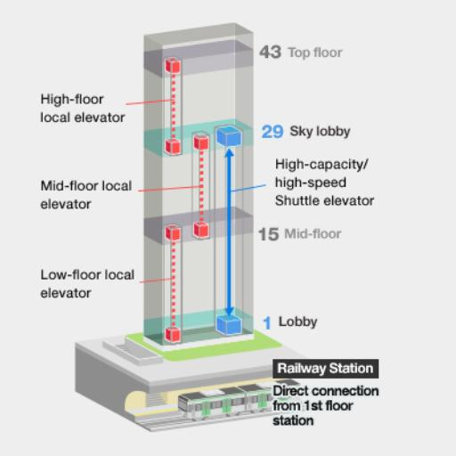
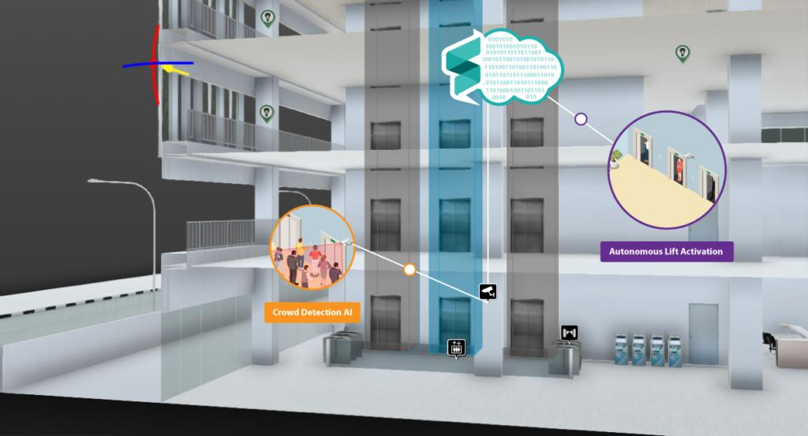

What Our Research Supports
Modern buildings use destination dispatch, zoning, and traffic-control software to move people more efficiently. KONE explains that destination control systems consider passengers' destination floors before assigning elevators, while Otis and Schindler describe systems that group passengers and guide them to assigned cars.

Elevator Zoning
Buildings can separate elevators by low, mid, and high zones to reduce unnecessary stops.

Express Movement
Some systems use express elevators and transfer points to handle high-floor traffic.

AI Traffic Support
Future systems could use demand information to improve elevator activation during busy times.